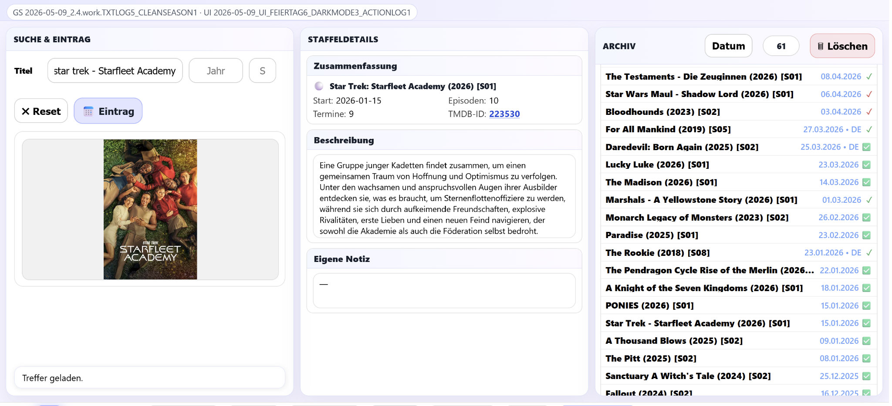

Download SerKal
Hier steht die aktuelle veröffentlichte SerKal-Version als vollständiges ZIP-Paket bereit. Einzelne Module werden nicht mehr getrennt angeboten.

Fanal
Fanal ist das Analysewerkzeug für SerKal. Es prüft den aktuellen Programmstand und stellt die Ergebnisse als übersichtlichen Bericht bereit.
Die Analyse gehört zum technischen Bereich von SerKal und richtet sich vor allem an die Weiterentwicklung und Fehlersuche.
Other projects
hasa 1.0 public preview
Auch wenn hasa auf der SerKal-Website zu Hause ist – mit SerKal hat es inhaltlich nichts zu tun. Es ist ein eigenständiges Assistenzskript für Horizon-Spieler und entwickelt sich Schritt für Schritt zu einem vielseitigen Werkzeugkasten rund um das Spiel.
Voralarm und Hauptalarm werden optisch zuverlässig angezeigt. Je nach Browser-Einstellung kann der Hauptalarmton jedoch erst nach einem weiteren Klick auf die Horizon-Seite abgespielt werden; dabei kann es zu einem Doppelton kommen. An einer saubereren Lösung wird gearbeitet.
/download/others/hasa/